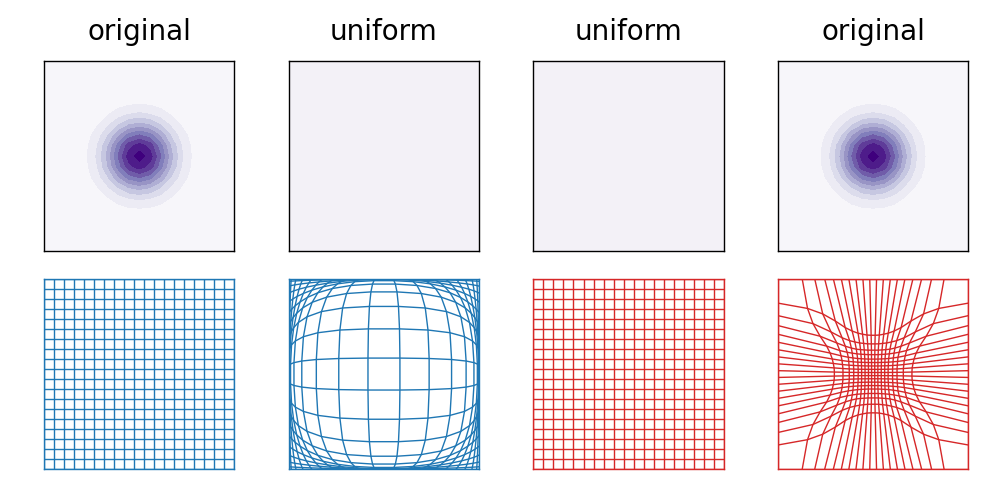
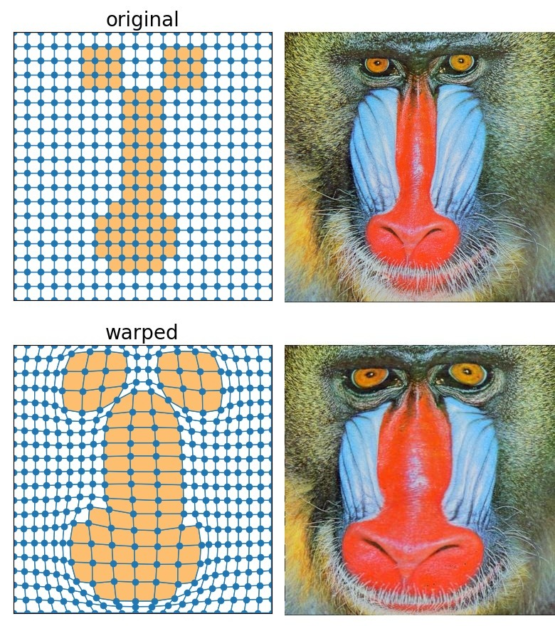

要点
- 分布から分布でなく 場から場への変形 に基づく 最適輸送 を提案
- 基本アイデアは元の分布を 擬似拡散 で 一様分布 と対応付けること
- 利点は離散分布でも 変形の途中過程 を可視化しやすいこと
最適輸送
分布から分布への変形でコスト (量×距離の総和) が最小のもの [1]
\[
\begin{align}
D(P,Q)=&\min_{\{f_{ij}\}}\sum_{i,j}f_{ij}d_{ij}\\
&\text{subject to }f_{ij}\geq 0,\ \sum_j f_{ij}=p_i,\ \sum_{i} f_{ij}=q_j.
\end{align}
\]
場の計算
- 一様分布への擬似拡散をバブロイドアルゴリズムで計算
- その逆変換を線形補間で計算

図1. 場の計算例
バブロイドアルゴリズム
- 平面グラフを 泡のような形 に変換する手法 [2]
- 各領域の面積を目標値に近づけつつ、辺の長さをなるべく短くする
\[
U=\sum_{f\in F}U_f,\quad U_f=(S_f-S^*_f)^2+\eta\sum_{(v,w)\in f}|p_w-p_v|^2.
\]

図2. バブロイドアルゴリズムの使用例 (文献[2]より転載)